UFO_Analysis.RmdIn this vignette, we will explore the ufoPackage, which provides tools for analyzing UFO sighting data. We will go through how to load the dataset, summarize the data, visualize trends over time, and utilize the Shiny app included in the package.
To install the ufoPackage, use the following command in your R console:
# Install the development version from GitHub
remotes::install_github("ETC5523-2024/assignment-4-packages-and-shiny-apps-rows0001/ufopackage/ufoPackage")
#> Skipping install of 'ufoPackage' from a github remote, the SHA1 (1ea48449) has not changed since last install.
#> Use `force = TRUE` to force installationFirst, let’s load the ufoPackage and the dataset:
library(ufoPackage)
# Load the cleaned UFO sightings dataset
data("ufo_sightings")
# View the first few rows of the dataset
head(ufo_sightings)
#> reported_date_time reported_date_time_utc posted_date city state
#> 1 2022-08-29 02:03:00 2022-08-29 06:03:00 2022-09-09 Pinehurst NC
#> 2 2022-08-19 21:51:00 2022-08-20 01:51:00 2022-10-08 Rapid City MI
#> 3 2022-08-13 01:30:00 2022-08-13 05:30:00 2022-09-09 Cleveland OH
#> 4 2022-08-06 17:00:00 2022-08-06 21:00:00 2022-09-09 Bloomington IN
#> 5 2022-08-04 03:40:00 2022-08-04 07:40:00 2022-09-09 Irvine CA
#> 6 2022-07-22 12:00:00 2022-07-22 16:00:00 2022-09-09 Moore OK
#> country_code shape reported_duration duration_seconds
#> 1 US <NA> 15 mins\u0085 900
#> 2 US <NA> 1 minute 60
#> 3 US <NA> 2 hours 172800
#> 4 US <NA> 30 seconds 30
#> 5 US <NA> 3 minutes 180
#> 6 US <NA> 10 minutes 600
#> summary
#> 1 Saw multi color object above horizon.
#> 2 An object in the shape of a straight line about an inch from our viewing area moving slowly across the sky
#> 3 Tone in the air.
#> 4 Black tic-tac shaped ufo. Moved with insane speed
#> 5 Two alien were scanning me
#> 6 Long cigar solid shaped craft with light beam
#> has_images day_part month day_of_week
#> 1 FALSE night 08 Monday
#> 2 FALSE nautical dusk 08 Friday
#> 3 FALSE night 08 Saturday
#> 4 FALSE afternoon 08 Saturday
#> 5 FALSE night 08 Thursday
#> 6 FALSE morning 07 FridayWe can obtain a summary of the dataset to understand its structure and contents
# Summary of the UFO sightings data
summary(ufo_sightings)
#> reported_date_time reported_date_time_utc
#> Min. :1925-12-28 19:00:00.00 Min. :1925-12-29 00:00:00.00
#> 1st Qu.:2004-10-03 01:11:00.00 1st Qu.:2004-10-03 05:11:00.00
#> Median :2012-02-05 22:22:30.00 Median :2012-02-06 03:22:30.00
#> Mean :2009-04-30 20:31:37.81 Mean :2009-05-01 00:31:37.81
#> 3rd Qu.:2016-01-25 19:18:30.00 3rd Qu.:2016-01-26 00:18:30.00
#> Max. :2023-05-18 15:27:00.00 Max. :2023-05-18 19:27:00.00
#>
#> posted_date city state country_code
#> Min. :1998-03-07 Length:96344 CA :11472 US :88213
#> 1st Qu.:2006-10-30 Class :character FL : 5833 CA : 3514
#> Median :2012-08-19 Mode :character WA : 5055 GB : 1818
#> Mean :2011-09-27 TX : 4170 AU : 602
#> 3rd Qu.:2016-07-15 NY : 3854 IN : 240
#> Max. :2023-05-19 AZ : 3448 MX : 143
#> (Other):62512 (Other): 1814
#> shape reported_duration duration_seconds summary
#> light :18894 Length:96344 Min. :0.000e+00 Length:96344
#> circle : 9361 Class :character 1st Qu.:3.000e+01 Class :character
#> triangle: 8977 Mode :character Median :1.800e+02 Mode :character
#> fireball: 7270 Mean :3.164e+04
#> other : 6482 3rd Qu.:6.000e+02
#> (Other) :43323 Max. :1.987e+09
#> NA's : 2037
#> has_images day_part month
#> Mode :logical night :48505 Length:96344
#> FALSE:96344 afternoon :12564 Class :character
#> astronomical dusk:10391 Mode :character
#> nautical dusk : 7652
#> morning : 7513
#> (Other) : 7171
#> NA's : 2548
#> day_of_week
#> Length:96344
#> Class :character
#> Mode :character
#>
#>
#>
#> Let’s visualize the number of UFO sightings over the years to identify trends. We will create a line plot showing the yearly count of sightings:
library(ggplot2)
#> Warning: package 'ggplot2' was built under R version 4.3.3
library(dplyr)
#> Warning: package 'dplyr' was built under R version 4.3.3
#>
#> Attaching package: 'dplyr'
#> The following objects are masked from 'package:stats':
#>
#> filter, lag
#> The following objects are masked from 'package:base':
#>
#> intersect, setdiff, setequal, union
# Summarize sightings per year
yearly_sightings <- ufo_sightings %>%
mutate(year = format(as.POSIXct(reported_date_time, format = "%Y-%m-%d %H:%M:%S"), "%Y")) %>%
group_by(year) %>%
summarise(count = n(), .groups = 'drop')
# Plotting the yearly sightings
ggplot(yearly_sightings, aes(x = as.numeric(year), y = count)) +
geom_line() +
labs(title = "UFO Sightings per Year", x = "Year", y = "Number of Sightings") +
theme_minimal()
The ufoPackage includes a Shiny app that allows for interactive exploration of the UFO sightings dataset. You can launch the app with the following command:
run_ufo_app() # Launch the Shiny appIn this vignette, we demonstrated how to utilize the ufoPackage for exploring UFO sighting data. We covered how to load the dataset, summarize it, visualize trends, and interact with the Shiny app for deeper analysis.
For more details and additional functions, please refer to the package documentation.